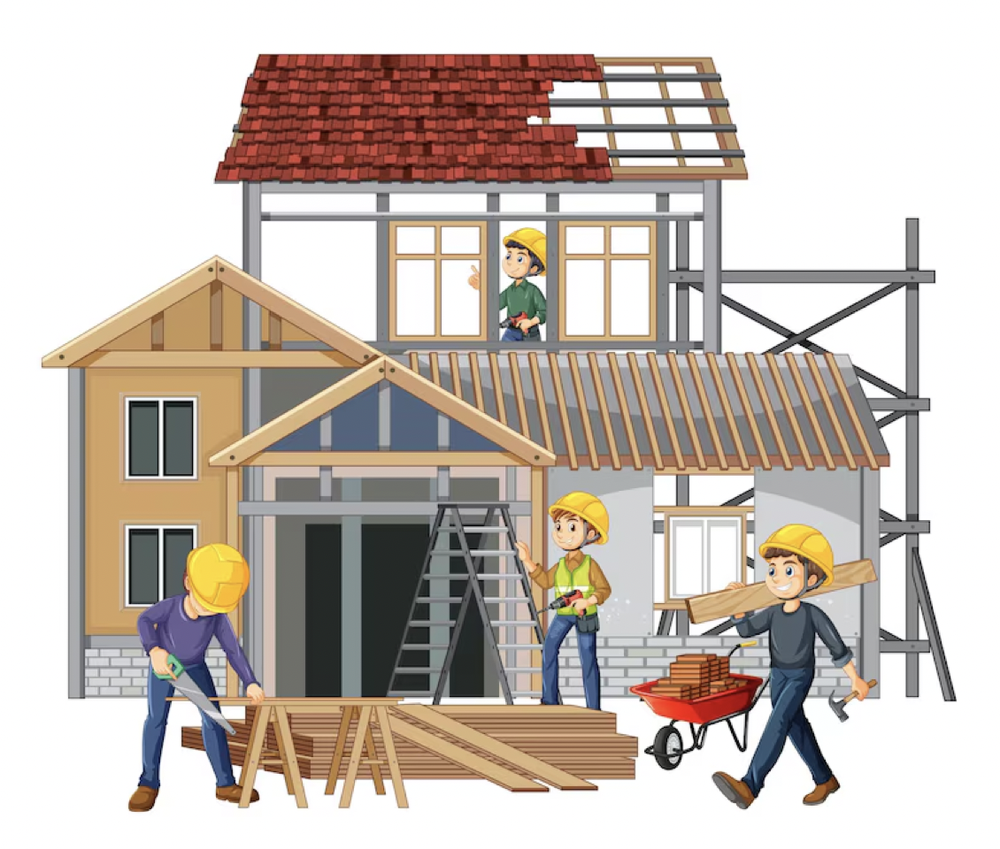
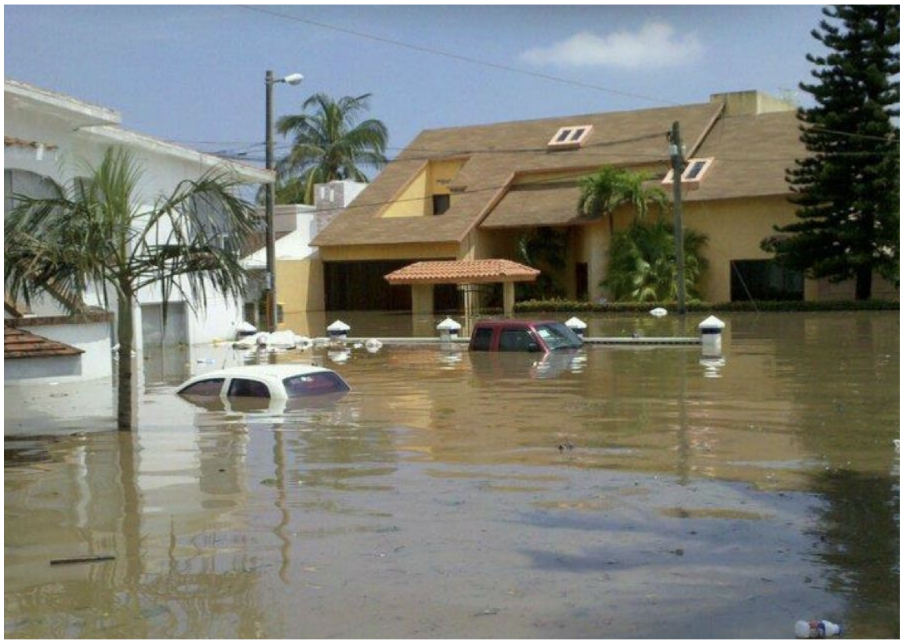
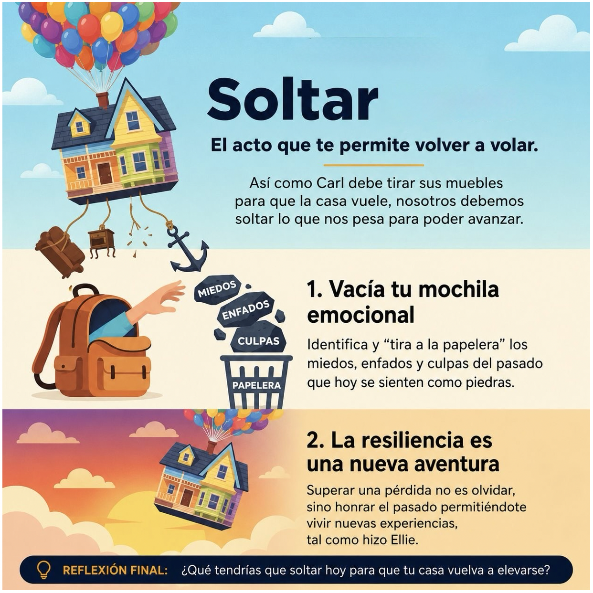
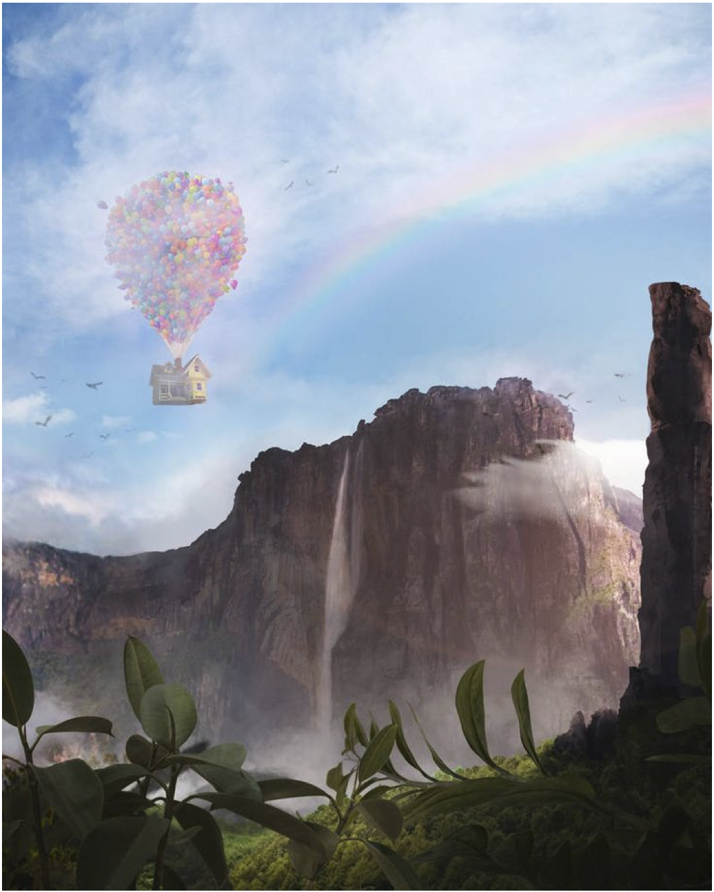
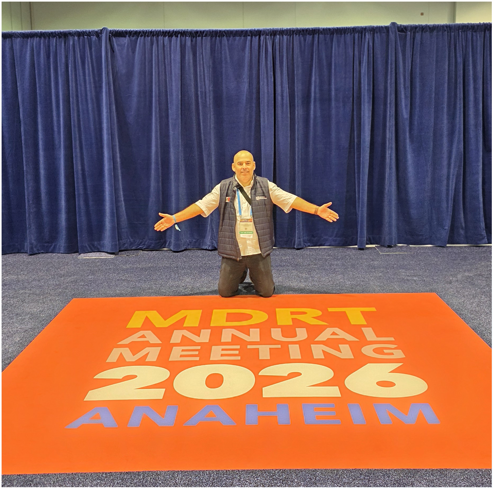
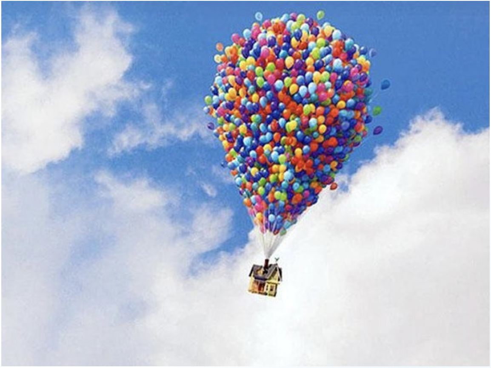

Nuestra vida, nuestros sueños, nuestros negocios. Ponemos cimientos fuertes, paredes de esfuerzo y un techo de ilusiones. Es nuestro refugio y nuestra creación.


A veces, llegan tormentas inesperadas. Situaciones fuera de nuestro control que inundan lo que hemos construido. “Hay tormentas que no destruyen una casa. Destruyen la versión de nosotros que vivía dentro.”
Cuando todo parece perdido, encontramos nuevas formas de elevarnos. Ideas, alianzas, esperanza. Elementos que, juntos, nos dan la fuerza para volver a despegar.
En nuestro viaje, encontramos compañeros inesperados. Personas que traen nueva energía, perspectivas diferentes y nos recuerdan la inocencia, el entusiasmo y el valor de ayudar a los demás.
El acto que te permite volver a volar.
Así como Carl debe soltar sus muebles para que la casa vuele, nosotros debemos soltar lo que nos pesa para poder avanzar.


El destino soñado siempre está ahí, esperando por ti.
Todos tenemos metas soñadas, un viaje, un auto, una experiencia. Corto, Mediano y Largo plazo.
Sabemos que llegar ahí requiere visión, valentía, disciplina y atreverse a dar el primer paso hacia lo desconocido, dejando atrás el conformismo... y enfocando el compromiso.

El Sr. Fredricksen utilizó miles de globos para elevar su hogar y alcanzar su sueño...
¡encuentra tu globo!
En el mundo de los negocios, esos "globos" también son estrategias correctas, innovación, alianzas...
¡encuentra tus globos!
Nuestra misión es proporcionar información de valor e impulso en el "timing" correcto con las personas correctas...
¡sé el globo de las personas!
Ayudar en el proceso de alguien, que el despegue sea seguro y, sobre todo, emocionante...
¡sé un globo!

¡Todos los días!
Muchas gracias.